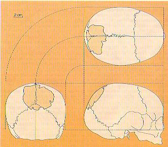

Creationist Arguments: Orce Man
Gish (1985) tells the story of "Orce Man", a fossil discovered in 1982 near the Spanish town of Orce and claimed to be a human cranial fragment. The fossil comes from the Venta Micena site, and is designated VM-0. A symposium on it was planned for late May, 1984. Earlier that month, says Gish (citing a UPI news report from May 14, 1984):"When French experts revealed the fact that "Orce Man" was most likely a skull fragment from a four-month-old donkey, embarrassed Spanish authorities sent out 500 letters cancelling invitations to the symposium."Two French scientists had suggested the fragment "may have come" from a donkey. Another scientist quoted in the news report admitted there was some doubt as to the bone's identity, but thought it was still quite likely human. A third scientist quoted in another news report from Associated Press claimed it was definitely humanoid. Instead of it being a "fact" that the fragment is "most likely" a donkey, a fairer assessment would be that it was still unidentified, but possibly an equid (not necessarily a donkey).
By the next paragraph, Gish is exaggerating even further, and is calling the disputed fragment a "donkey's skull". It is not a skull, and it was not necessarily from a donkey.
It is easy to score cheap rhetorical points by implying that scientists are so incompetent that they cannot tell the difference between a human and a donkey. A more charitable explanation, which turns out to be the correct one, is that the bone is genuinely difficult to identify, as proved by the fact that debate over its status has continued for over 10 years.
A fractal analysis of the skull sutures by Gibert and Palmqvist (1995) strongly indicated that the fragment was not from an equine. Also in 1995, an international symposium was eventually held at Orce to discuss this and other material, and a number of workers there also suggested that VM-0 was a hominid fossil (Zihlman and Lowenstein 1996).
Two articles appearing in July 1997 disputed that claim, however. Palmqvist (1997), citing errors in the paper that he had coauthored with Gibert, now claimed that the fractal evidence was clearly in favor of an equid origin for VM-0, and Moya-Sola and Kohler (1997) made the same claim based on an anatomical study. Even this has not resolved the debate, because a later paper (Borja et al. 1997) has argued in favor of VM-0 being a hominid, based on immunological studies of fossil proteins performed at two independent laboratories. For now, it would seem safest to make no firm conclusions about the identity of VM-0 or the other possible hominid fossils from Orce.
"Orce Man" is important because, if valid, it would be the earliest human fossil in Europe. In most circumstances, such a scrappy fossil would have received little attention. Some mistakes were made in its analysis, but that is an inevitable result of the scientific process, especially when the evidence is so ambiguous. Importantly, scientists have continued to work to answer the doubts about the fossils. And, whatever the status of the fossils, they do not affect the validity of the rest of the evidence for human evolution.
|
 The location of the Orce fragment on a child's skull - assuming, that is, that the fossil does actually come from a human. (From the March 1996 edition of Investigacion y Ciencia) |
References
Borja C., Garcia-Pacheco M., Olivares E.G., Scheuenstuhl G., and Lowenstein J.M. (1997): Immunospecificity of albumin detected in 1.6 million-year-old fossils from Venta Micena, in Orce, Granada, Spain. American Journal of Physical Anthropology, 103:433-41.Gibert J. & Palmqvist P. (1995): Fractal analysis of the Orce skull sutures. Journal of Human Evolution, 28:561-75.
Gish D.T. (1985): Evolution: the challenge of the fossil record. El Cajon, CA: Creation-Life Publishers.
Moya-Sola S. and Kohler M. (1997): The Orce skull: anatomy of a mistake. Journal of Human Evolution, 30:91-7.
Palmqvist P. (1997): A critical re-evaluation of the evidence for the presence of hominids in lower Pleistocene times at Venta Micena, southern Spain. Journal of Human Evolution, 33:83-9.
Zihlman A.L. & Lowenstein J.M. (1996): A Spanish Olduvai? Current Anthropology, 37:695-7. (report on an international paleoanthropology conference at Orce)
Related links
1.8 million-year-old human presence claimed in Spain (an article from British Archaeology)Thanks to Boyce Rensberger for obtaining a number of news reports about "Orce Man".
This page is part of the Fossil Hominids FAQ at the talk.origins Archive.
Home Page |
Species |
Fossils |
Creationism |
Reading |
References
Illustrations |
What's New |
Feedback |
Search |
Links |
Fiction
http://www.talkorigins.org/faqs/homs/a_orce.html, 02/13/2001
Copyright © Jim Foley
|| Email me